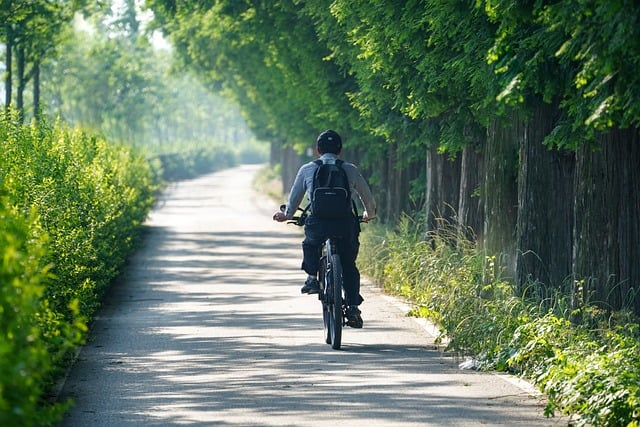

¿Qué es el Ciclismo Urbano?
El ciclismo urbano es una forma de transporte eficiente, sostenible y saludable dentro de las ciudades. Permite desplazarse evitando el tráfico y reduciendo la contaminación ambiental.
Beneficios del Ciclismo Urbano
- Contribuye a la reducción de emisiones de CO₂.
- Evita congestiones de tráfico.
- Fomenta un estilo de vida saludable.
- Es una alternativa económica y accesible.
- Promueve ciudades más sostenibles.
Consejos para un Ciclismo Urbano Seguro
- Utilizar casco y elementos reflectantes.
- Respetar las normas de tránsito y los carriles bici.
- Mantener la bicicleta en buen estado.
- Ser visible y predecible en el tráfico.
- Evitar el uso del celular mientras se pedalea.
Equipamiento Esencial
- Bicicleta urbana con luces y timbre.
- Casco de protección.
- Chaleco reflectante para mayor visibilidad.
- Antirrobo para asegurar la bicicleta.
- Mochila o cesta para transportar objetos.
Imagen del Ciclismo Urbano
